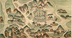

自然科学
北京大学在建设世界一流大学的过程中，应该在科学研究活动中体现科学领导力，在前沿科学与科学主流方向取得标志性研究成果，面向国家需求为国家安全和经济社会发展做出重大贡献。
北京大学自然科学研究（理工医）围绕以上宗旨，在扎实完成基础性科研管理服务工作的前提下，结合北京大学自身科研特色，发掘北京大学现有优势，加强组织协调和策划工作：努力争取重大国家科技项目；落实教育部“高等学校创新能力提升计划”，积极策划组建“2011计划”协同创新研究平台；加强科研平台的建设，协调促进各类各级重点研究基地建设，推动重大科学设施建设；服务人才成长，尤其强化对青年科研人员的科研管理服务；积极组织科技支撑文化发展项目，推动北京大学文理医科交叉科学研究。
北京大学2013年在国家自然科学基金、国家重点基础研究发展计划（“973”计划）、高技术研究发展计划（“863”计划）、国家科技支撑计划、科研基地建设等方面继续保持竞争力，实现了北京大学科研工作的可持续快速发展。科研规模总量的扩大和质量的提高，对科研管理提出了新的挑战。